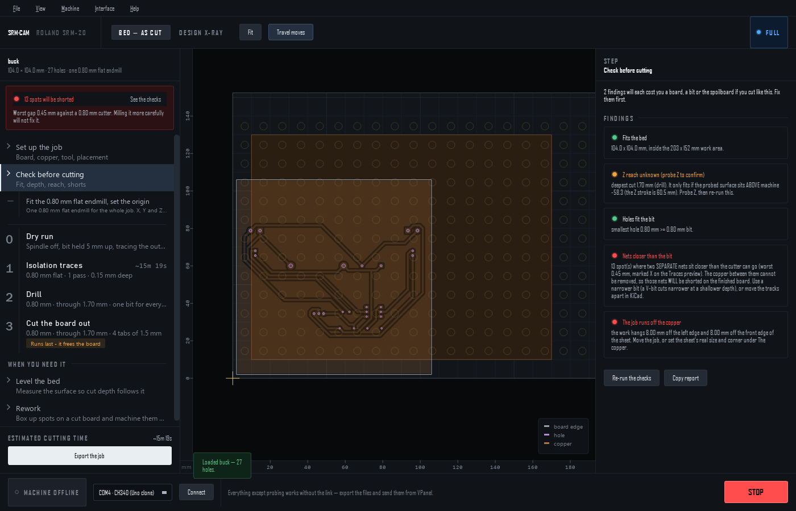
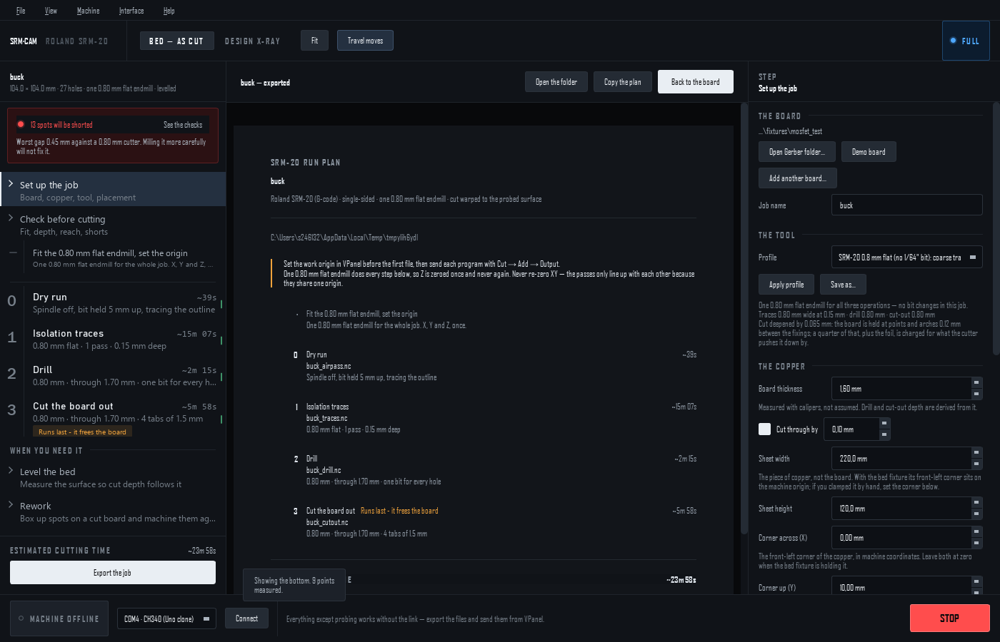

Milling a board
The single-sided workflow, start to finish.
1. Set up the job
The first step on the rail. Everything about the job is on this one page.
| Section | What to do |
|---|---|
| The board | Open Gerber folder… or Demo board. The job name is the KiCad project's; it is what the files are called. Add another board… starts a panel. |
| The tool | Pick a profile and Apply profile — a complete set of bits, depths and feeds for all three operations. The lab's SRM-20 0.8 mm flat opens applied. The summary underneath says what will be cut, and by how much deeper if the board is held at points. |
| The copper | Board thickness from calipers. Cut through by derives the drill and cut-out depth from it. Sheet width and height, and its front-left corner — Set the corner from the tool reads it off the machine. Held down with M4 screws and Held down by are on Holding the copper. |
| Where it sits | Type X and Y, turn it in 90° steps, or Centre it on the bed. Or drag it on the stage and nudge with the arrow keys. |
| Operation | Layer | Does |
|---|---|---|
| Isolation traces | B.Cu, mirrored | Channels around every copper feature; -1 passes clears all the background copper |
| Drill | Excellon | One bit for every hole, larger ones milled as circles — or one file per diameter |
| Cut the board out | Edge.Cuts | The outline with holding tabs — always last |
2. Check before cutting

- Fits the bed — the whole job, dowels included, inside the 203 × 152 mm travel.
- Z reach — the deepest cut against the 60 mm stroke, measured from the surface once Zero Z here has touched it.
- Nets closer than the bit — spots the cutter physically cannot separate, marked ✕ on the traces. These will short whatever the depth: fix the clearance in KiCad or use a narrower bit.
- The job is on the copper — against the sheet you declared, not the bed.
- Holes fit the bit, the screw heads clear the lift height, the boards of a panel keep clear of each other.
The worst finding is on the rail's red banner as well, and stays there. Copy report puts the list on the clipboard.
3. Walk the plan
Select a numbered step and the stage draws its toolpath; the inspector shows the bit, the depth, the estimated time and — in the Full tier — the cutting parameters, editable. View → Watch this step in 3D… (Ctrl+3) plays it.
4. Export the job
Export the job (Ctrl+E) writes every file in the plan and puts the run sheet in front of you.
<name>_airpass.nc step 0 · DRY RUN — spindle off, bit 5 mm up
<name>_traces.nc step 1 · isolation, mirrored
<name>_drill.nc step 2 · one bit, larger holes milled as circles
<name>_drill_<dia>mm.nc step 2 · one file per diameter instead
<name>_cutout.nc step 3 · outline with tabs — LAST
<name>_runplan.txt the same plan as text
5. Run in VPanel
- Fit the bit, set the origin X, Y and Z, once. From here on only Z is ever re-zeroed. NC jobs obey G54: XY at the machine origin, zero only Z.
- Watch the dry run
Send
<name>_airpass.ncfirst. Spindle off, bit 5 mm up, tracing the outline slowly enough to follow. If it leaves the copper, stop and re-place the stock — nothing has been cut. - NC-code mode
Cut → Add → Output; the
.ncstreams like RML. - In order Traces, drill, cut-out last. Re-zero Z after a bit change; Mark as run on each step ticks it off on the rail.
About 60 mm of usable Z. If the surface sits too low the head tops out and cuts air or shallow. Raise the work surface (add spoilboard). The Z-reach check knows, once the surface has been touched.